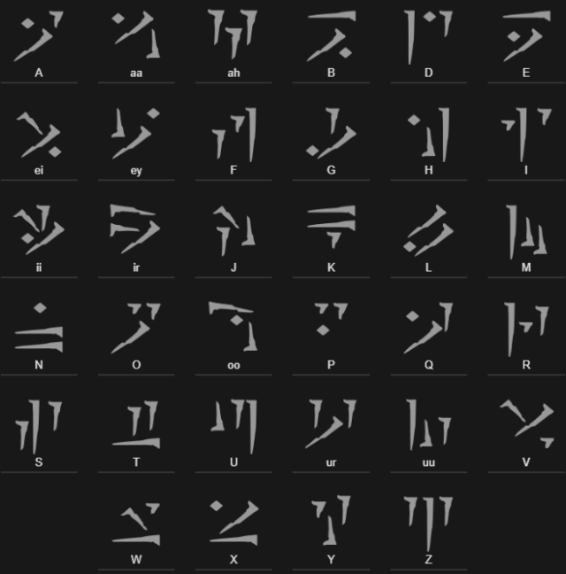

Introduction
The Dragon Language is the language used in The Elder Scrolls V: Skyrim by dragons in shouts, on word walls, in names, etc. It is provided by the Skyrim Game Guide and in-game dialogue translations by Alduin, Paarthurnax, Odahviing, and Durnehviir. Some may also be found in the books, Dragon Language: Myth no More and Songs of Skyrim. Additionally, each Dragon Priest's name is a word in the Dragon Language.
Pronunciation
| Digraph | IPA | Example |
|---|---|---|
| aa, ah | /ɒ/ | thought, taut, hawk |
| ei | /aɪ/ | ice, eye, pie |
| ey | /eɪ/ | fate, pay, lay |
| ii | /i/ | wing, fling, see |
| ir | /ir/ | |
| ur | /ur/ | near, fear, tear |
| oo | /u:/ | goose, group, few |
Grammar
The language has basically the same grammar as English, with the exceptions that it does not have an equivalent to English's apostrophes; it tends to place prepositional phrases earlier in sentences than in English, and does not have tense. To pluralize a word, the final letter is repeated and "e" is added (i.e. "grohiik": wolf; "grohiikke": wolves) Words are constructed in such a way that, when combined, they form new words. A known construction is "Junnesejer," which means "the kings of the east." "Jun" being king and "Jer" being east. Thus, combining words will allow one to convey an idea or another word. For Example: "moon and eclipse" are not present in the vocabulary, but sun ("krein") and night ("vulon") are. The word is based on which of the words is the first because the first word is prominent. If one were to say "vulonkrein," the prominent word would be "night" while the secondary is "sun," and there would be "moon" (i.e. a light in the night). Vice versa with "kreinvulon," as "sun" is prominent and "night" is secondary, so there would be "eclipse" (darkness where the sun is). With Junnesejer, it means "the kings of the east," but if one were to put it as Jersejun, it would be "East King." "Se" is a conjunction between words that are combined to fill in the particles, but it's just as easily-understood without it.
Dovahzul Alphabet
